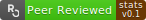
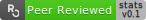
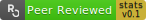

3 Guide for Authors
The current chapter should be considered an extension of the corresponding “Guide for Authors” in rOpenSci’s “Dev Guide”. The principles for package development described there also apply to statistical packages, with this chapter describing additional processes and practices for packages intended for submission to the statistical software peer review system.
The major additional process is the documentation of how a package complies
with the general and category-specific standards given in Chapter
6. Authors need to document within the software itself every point
at which it complies with every general and every applicable category-specific
standard listed in that chapter. The process of doing so is facilitated by the
srr package, as described in
detail in Sub-section 3.4, below.
Prior to that sub-section, this chapter begins with consideration of the scope
of statistical software able to be considered for review, followed by
descriptions of two tools intended to be used through the entire process of
package development. The first tool is the pkgcheck
package which can be used
to confirm whether software is ready for submission or not, and enables authors
to locally run the suite of checks which are automatically run on package
submission. The subsequent sub-section describes our autotest
tool, which is intended to
be used through the entire process of package development. The third
sub-section describes how use the srr
package to address the major
task of aligning software with our general and category-specific
standards for statistical software, and the final sub-section
describes the final step of specifying which grade of badge authors are aiming
for.
3.1 Scope
The first important task prior to submitting a package is to estimate whether a package is likely to be considered within our scope for statistical software. As described in the Overview, packages are generally considered in scope if they fit one or more of the categories listed there. Prior to submission, authors must choose one or more of these categories, and document how their software aligns with the corresponding standards given in Chapter 6, according to the procedures described below. Any software which can be aligned with one or more sets of category-specific standards will by definition be considered in scope.
Authors are encouraged to contact us at any point prior to, or during, development, to ask about whether a package might be in scope, or which categories it might fit within. Categorisation of packages may not always be straightforward, and we particularly encourage authors who are unsure about whether a package belongs in a particular category or not to contact us for discussion. An initial judgement of whether or not a package belongs in a particular category may be gained by examining the respective standards. Any package for which a large number of standards from a particular category may be considered applicable (regardless of whether or not they would actually be checked) is likely to fit within that category. Once you have determined that your package is likely to fit into one or more of our in-scope categories, you’ll need to apply our three primary development tools described in the following two sub-sections.
3.2 The pkgcheck package
The pkgcheck package can
be used to confirm whether software is ready for submission or not. The checks
implemented within this package are also automatically run upon submission, and
packages are expected to successfully pass all checks prior to initial
submission. Packages may only be submitted once the main pkgcheck()
function
indicates such, through clearly stating,
This package may be submitted
This function accepts a single argument of the local path to
the package being checked, and returns a detailed list of checks and associated
results. The return object has a summary method which prints a formatted
result to the console indicating whether a package is ready for
submission or not. See the main package
website for more details.
The pkgcheck()
function
is also applied to all packages upon initial submission, in response to which
our ropensci-review-bot will print the results in the issue. In the unlikely
circumstances that a package is unable to pass particular checks, explanations
should be given upon submission about why those checks fail, and why review may
proceed in spite of such failures.
An example result of the pkgcheck()
function
may be seen by applying it to the skeleton srr (Software Review
Roclets) package:
path <- srr::srr_stats_pkg_skeleton ()
checks <- pkgcheck::pkgcheck (path)
summary (checks)##
## ── demo 0.0.0.9000 ─────────────────────────────────────────────────────────────
##
## ✔ Package uses 'roxygen2'
## ✖ Package does not have a 'contributing.md' file
## ✖ Package does not have a 'CITATION' file
## ✖ Package does not have a 'codemeta.json' file
## ✔ All functions have examples
## ✖ Package 'DESCRIPTION' does not have a URL field
## ✖ Package 'DESCRIPTION' does not have a BugReports field
## ✔ Package name is available
## ✖ Package has no continuous integration checks
## ✖ Package coverage is 0% (should be at least 75%)
## ✔ R CMD check found no errors
## ✔ R CMD check found no warnings
## ✖ This package still has TODO standards and can not be submitted
##
## ℹ Current status:
## ✖ This package is not ready to be submitted
3.3 The autotest package
The autotest package is
an automated assessment tool which all packages are expected to pass in order
to be accepted for submission. The package implements a form of “mutation
testing,” by examining the types of all input parameters, implementing
type-specific mutations, and examining the response of each function in
a package to all such mutations. This kind of mutation testing is a very
effective way to uncover any unexpected behaviour which authors themselves
might not necessarily pre-empt. The purpose of using
autotest to prepare
packages is to avoid as much as possible the common situation of reviewers
discovering bugs when they attempt to use software in ways that differ from
typical uses envisioned by authors themselves. Reviews of software prepared
with the help of
autotest should be less
burdened by discussions of what are often minor technical details, and more
able to focus on “higher level” aspects of software quality.
Full documentation of how to use
autotest in package
development is provided on the package
website, and we
particularly encourage any authors intending to develop packages for submission
to our peer review system to step through the main autotest
vignette,
and to apply autotest
continuously throughout package development, to ensure that
autotest_package()
returns clean (NULL) results when the package is first submitted.
3.4 Alignment with Standards
Once a package has been sufficiently developed to begin alignment with our
standards, and once all issues revealed by
autotest have been
addressed, authors will need to use our third tool, the ssr (software
reveiw roclets) package
to insert both general and category-specific standards into their code, and to
begin the process of documenting within the code itself how and where the code
adheres to the individual standards. The srr
package can be installed locally
by running either one of the following two lines.
remotes::install_github("ropensci-review-tools/srr")
pak::pkg_install("ropensci-review-tools/srr")srr procedures are described in detail on the package
website, and in particular in
the main
vignette.
Authors are first encouraged to obtain a local copy of the source code for
that
vignette,
and to step through each line in order to understand how the procedure works.
Having done that, you may then insert standards into your own package by
running the following line from within the local directory of your package,
srr_stats_roxygen (category = c ("<category-1>", "<category-2>"))That will insert a new file into the R/ directory of your package called (by
default) srr-stats-standards.R. All standards initially have
a roxygen2 tag of @srrstatsTODO, to indicate
that these standards are yet to be addressed. These tags are processed by the
srr roclet which needs to be
connected with your package by modifying the Roxygen line of your
DESCRIPTION file to the following form:
You do not need to add the srr package anywhere else in your DESCRIPTION
file, nor do you need to retain this line when submitting packages to CRAN (or
elsewhere). You should nevertheless retain the line at all other times, and you
can easily disable the roclet output by including #' @srrVerbose FALSE
somewhere within your documentation. Note that srr documentation lines are
used only to produce on-screen output triggered by running
roxygen2::roxygensise(),
or the equivalent function,
devtools::document(),
and do not appear in actual package documentation.
The srr roclet recognises and
process three tags:
-
@srrstatsTODOto flag standards yet to be addressed; -
@srrstatsto flag standards which have been addressed, and followed by descriptions of how your code addresses those standards; and -
@srrstatsNAto flag standards which you deem not to be applicable to your code, followed by explanations of why you deem those standards not applicable.
The file generated by
srr_stats_roxygen()
initially contains two roxygen2 blocks, the
first containing every standard potentially applicable to your package, tagged
with @srrstatsTODO, and the second with a title of NA_standards, to
document standards deemed not applicable. The first task after having generated
this file is to move standards to approximate locations within your package
where they are likely to be addressed. For example, standards concerning tests
should be moved somewhere within the tests/ directory, standards concerning
documentation to the main README.Rmd file, or within a vignette file. The
package
skeleton
includes code demonstrating how to include roclet tags within .Rmd files.
Moving different standards to more appropriate locations within your code will
break down an initially large single list of standards into more manageable
groups dispersed throughout your code. As each standard is addressed, it should
be moved to one or more locations in your code as near as possible to relevant
code, the tag changed from @srrstatsTODO to @srrstats, and a brief
description appended to explain how that standard is addressed. Standards
deemed not to be applicable to your package should all be grouped together
within a single roxygen2 block with a title of
NA_standards, each with a tag of @srrstatsNA, and a brief description of
why those standards are deemed not to be applicable.
Software to be submitted for review must contain no @srrstatsTODO tags –
that is, all standards must have been addressed by modifying every tag to
either @srrstats or @srrstatsNA, as described above. Two useful functions
to aid package alignment with standards are:
- The
srr_stats_pre_submit()function, which confirms that all standards have been addressed prior to submission. - The
srr_report()function, which generates a summary report with hyperlinks to locations within your code at which all standards are placed.
The output of both of these functions are included in the result of the
pkgcheck()
function,
both when run locally, and as run upon initial package submission. The
srr_stats_pre_submit()
function
can be used locally to confirm that,
## ✔ All applicable standards have been documented in this packagewhile the result of the srr_report()
function
may be accessed through the link given in the pkgcheck output, or it can be
viewed by calling that function directly.
3.5 Gold, Silver, and Bronze Badges
All statistical software which is recommended for acceptance by reviewers is entitled to display an rOpenSci badge. This badge is a modified version of the badge for the current peer-review system, with an additional section on the far right indicating the version of that standards against which the software was assessed, coloured according to the “grade” of the badge. The three possible badges look like this:
 bronze for software which is sufficiently or minimally compliant with standards to pass review.
 silver for software for which complies with more than a minimal set of applicable standards, and which extends beyond bronze in least one notable way, as explained below.
 gold for software which complies with all standards which reviewers have deemed potentially applicable.
The submission template requires authors to identify the category they wish to attain from the review process. These standards are not static, and it is always possible to elevate a badge to a higher grade subsequent to review. Badge grades may also be downgraded for code which is not continuously aligned with ongoing developments in standards. The following sub-sections provide further clarification of each grade.
3.5.1 Bronze
Software which is sufficiently or minimally compliant with standards will receive a bronze badge. One common reason for this badge is software which authors do not intend to develop further following review. This commonly arises for software produced from research projects which have been completed, leaving no funding to further develop the software. Another reason might be that software has been developed for a particular use case, with authors unable to align it with additional standards in order to expand its general utility. A bronze badge need not signify any weakness or inadequacy in software, rather it will generally signify software which has been developed for one particular use case, and which will not be subject to significant further development.
3.5.2 Silver
Silver badges are granted to software which extends beyond the minimal requirements of bronze in at least one the following four aspects:
- Compliance with a good number of standards beyond those identified as minimally necessary. This will require reviewers and authors to agree on identification of both a minimal subset of necessary standards, and a full set of potentially applicable standards. This aspect may be considered fulfilled if at least one quarter of the additional potentially applicable standards have been met, and should definitely be considered fulfilled if more than one half have been met.
- Demonstrating excellence in compliance with multiple standards from at least two broad sub-categories. Sub-categories are distinguished in the Standards Chapter by three numbers, so that the General Standards have five sub-categories numbered 6.1.1 to 6.1.5. This aspect would require software to extend notably beyond the requirements of two or more standards in at least two sub-categories (regardless of whether general or category-specific standards). For example, software which might otherwise be assessed at bronze grade, yet which is both excellently documented, and has an outstanding test suite, may be considered to fulfil this aspect.
- Have a demonstrated generality of usage beyond one single envisioned use case. Software is frequently developed for one particular use case envisioned by the authors themselves. Generalising the utility of software so that it is readily applicable to other use cases, and satisfactorily documenting such generality of usage, represents another aspect which may be considered sufficient for software to attain a silver grade.
- Internal aspects of package structure and design. Many aspects of the internal structure and design of software are too variable to be effectively addressed by standards. Packages which are judged by reviewers to reflect notably excellent design choices, especially in the implementation of core statistical algorithms, may also be considered worthy of a silver grade.
3.5.3 Gold
To attain a gold badge, software must comply with all applicable standards, and must also fulfil at least three of the four aspects described above for silver-grade badges. Both the applicability of standards, and fulfilment of these three aspects, will ultimately determined by reviewers. Moreover, compliance with all grades is assessed against current standards, meaning that a gold badge must be actively maintained as standards themselves are revised and updated.